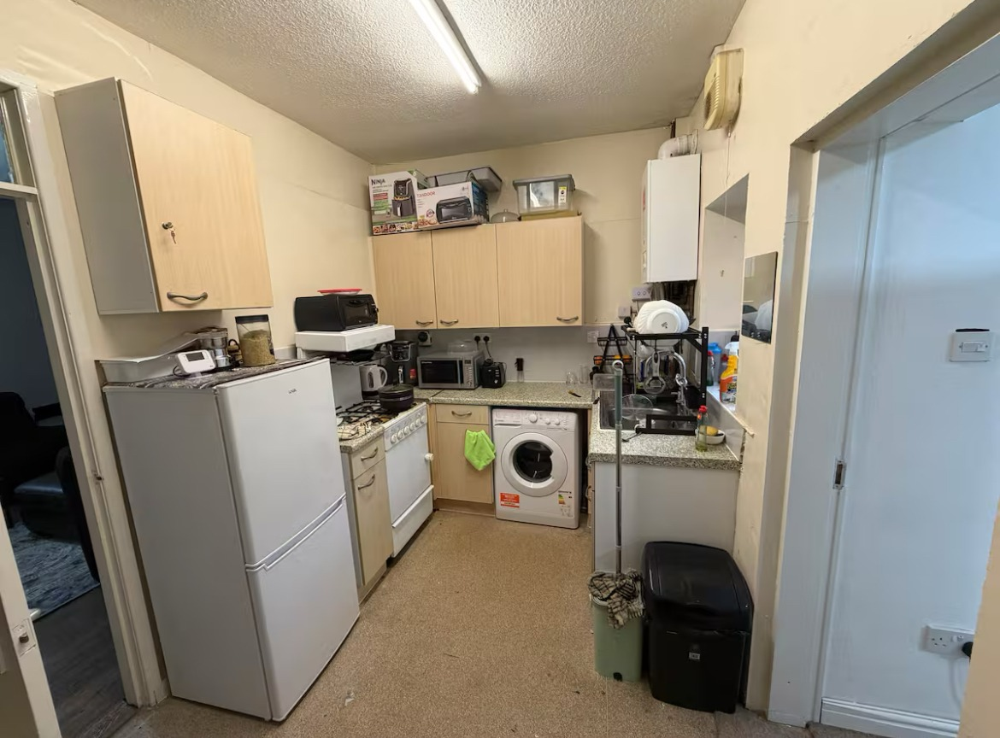
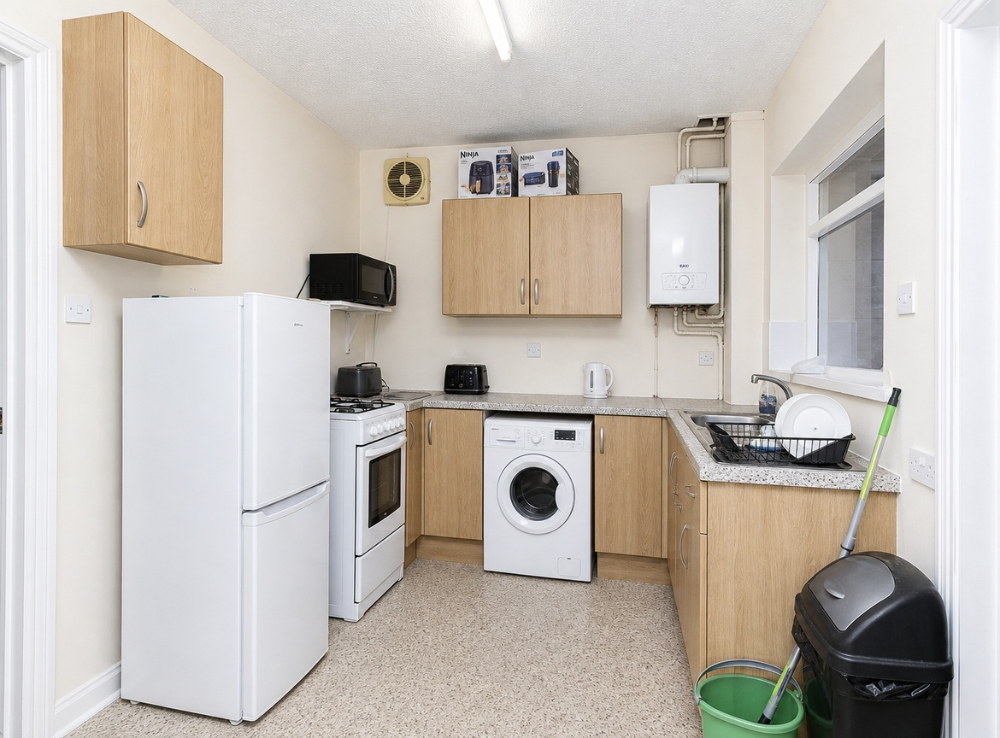
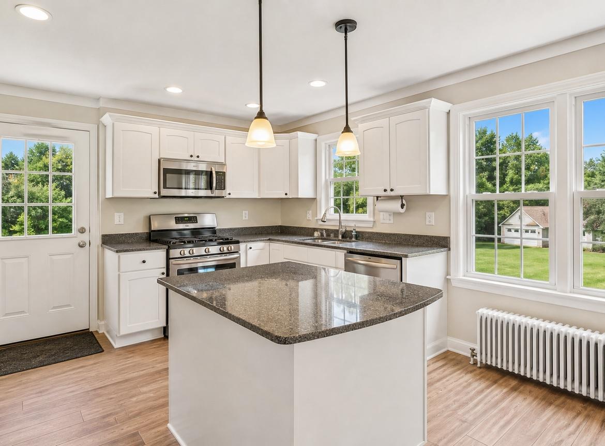
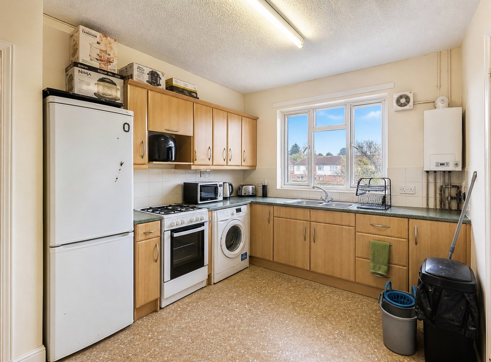
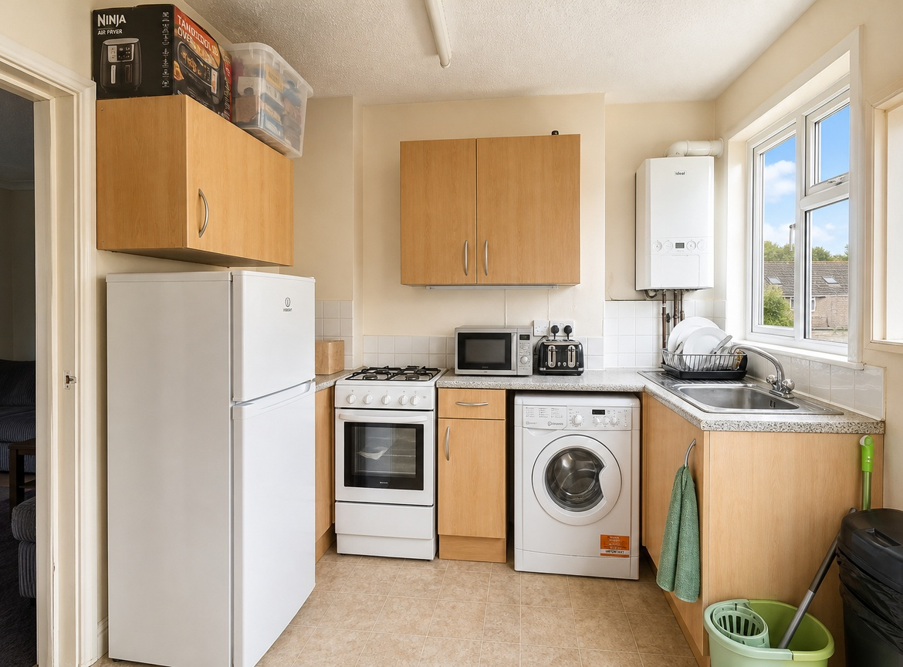
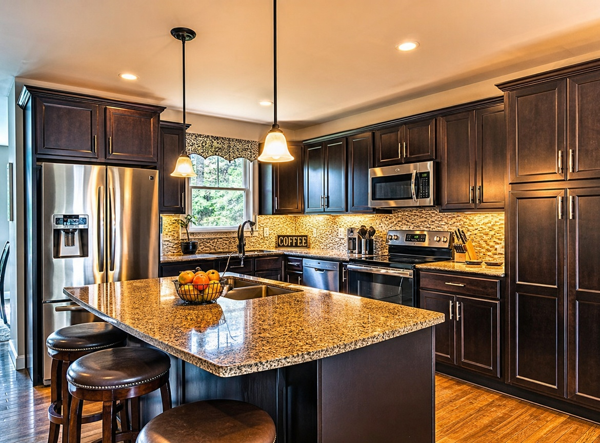
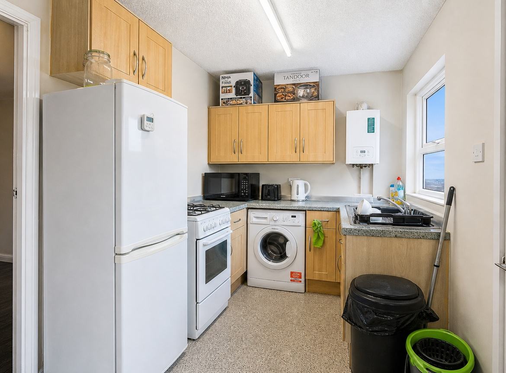
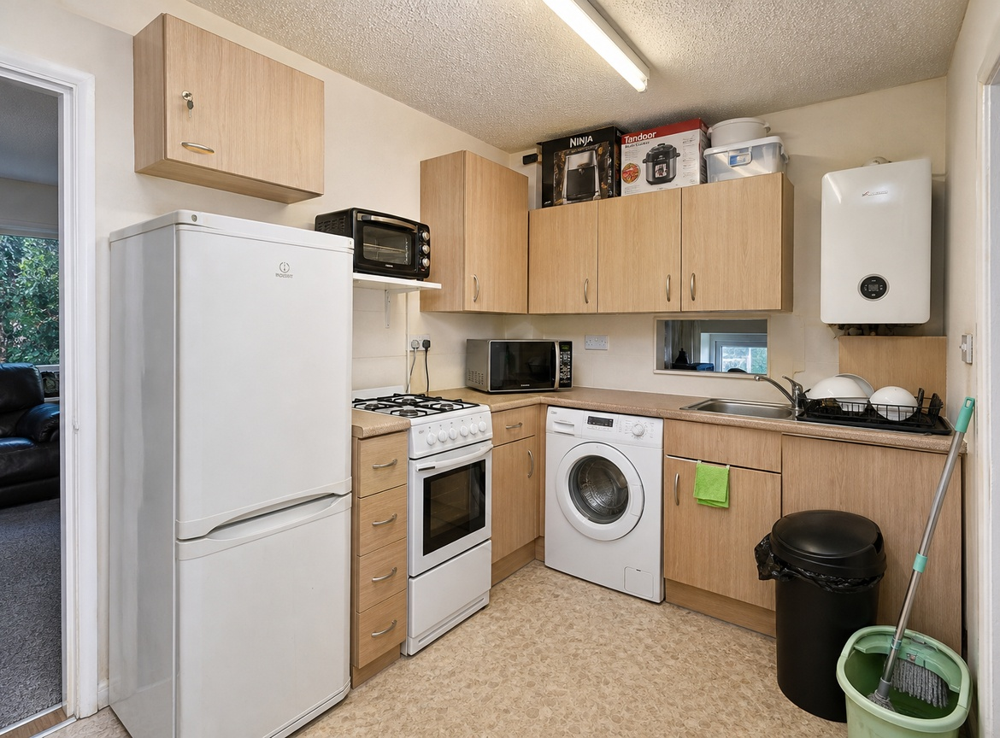
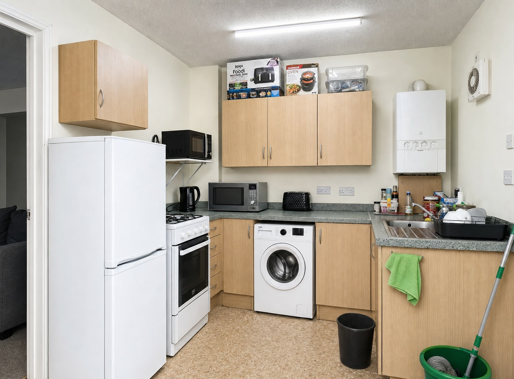
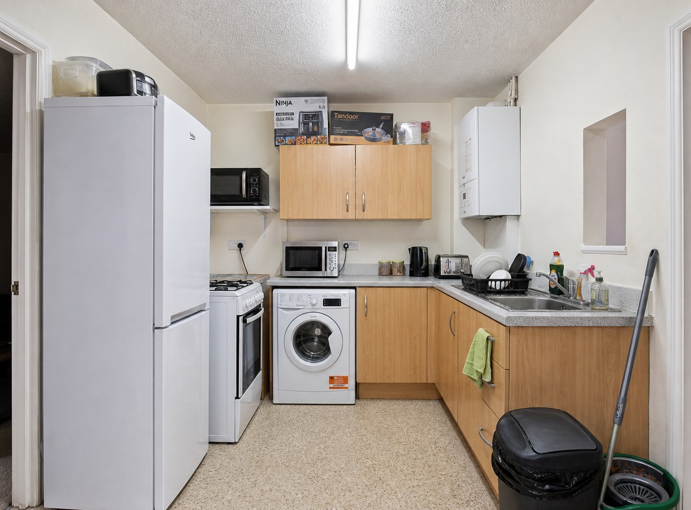

Ten live renders of one real kitchen photo (experiments/IMG_1201.jpeg, 1170×864) through four pipeline variations of the enhance / fix-lighting service, on the real Cursor Cloud Agents API with composer-2.5, repo-less. Goal: find the best time/quality trade-off. Companion to the bedroom staging lab.

A small galley kitchen under a single fluorescent tube: strong yellow-green color cast (measured cast 23.7), dull exposure (mean luminance 139), soft focus (sharpness 2.35), window over the sink seen at a sharp angle. Exactly the kind of photo the enhance service exists for — and a hard fidelity test, because the room is cluttered with small objects (boxes on the cabinets, mop, bins, dish rack, boiler) that a lazy model loves to “clean up”.
| Variant | Agent wrapper | Enhance instruction | Poll | Idea |
|---|---|---|---|---|
| old | Pre-July wrapper: “study the photo and note its features” first, then generate, then verify with up to 2 attempts (un-gated) | Old wording (exposure/white-balance/windows), no aspect-ratio hard-no | 5s | Baseline: what production did before this week’s PR |
| prod | Shipped wrapper: generate immediately, then confirm-only verify (enhance never regenerates), dimension line injected | Current production wording | 3s | Control: what the PR ships today |
| lean | Stripped further: no verify step at all — “the tool’s output is final, deliver it” | Current production wording | 3s | Time-optimized: is the verify step dead weight for enhance? |
| tuned | Shipped wrapper (same as prod) | Rewritten “professional photo editor” wording: neutralize color casts, balance exposure, lift shadows, de-glare fixtures, deblur/denoise, preserve textures | 3s | Quality-optimized: better lighting language, same guardrails |
Wall clock from agent creation to delivered, dimension-locked file. All ten delivered artifacts came back 1536×1024 raw and were locked to 1170×864 (exact input dimensions) by lockToDimensions.
| Variant | Runs | Faithful | Time (faithful runs) | Verdict |
|---|---|---|---|---|
| old | 2 | 1 of 2 1 wrong room | 296s | Slow and unsafe: inventory step costs time, un-gated retry still approved a fabricated luxury kitchen |
| prod | 4 | 2 of 2 delivered 2 timeouts | 168s, 217s | Fast and faithful when it lands, but 2 of 4 agents stalled past the 10-min cap |
| lean | 2 | 1 of 2 1 wrong room | 138s | Fastest (108–138s) but a coin flip: with no verify, a rogue generation ships straight to the customer |
| tuned SHIPPED | 3 | 3 of 3 | 179s, 180s, 309s | Only variant with zero failures; best white balance; median ~3 min |




RUNNING and were cancelled). The agent occasionally over-thinks the confirm step even though the prompt forbids regeneration — worth watching, and one more reason the wording matters.




Mean luminance (target: brighter than 139 but believable), color cast = spread between RGB channel means (lower = more neutral whites), sharpness from sharp() stats (higher = crisper).
| Image | Luminance | Color cast | Sharpness | Faithful? |
|---|---|---|---|---|
| Original input | 138.9 | 23.7 | 2.35 | — |
| old #1 | 188.5 (over-bright) | 14.4 | 3.81 | drift |
| prod #1 | 162.7 | 33.3 (blue push) | 3.97 | yes |
| prod #4 | — | — | — | yes |
| lean #2 | 168.9 | 19.4 | 4.42 | drift |
| tuned #1 | 161.3 | 15.8 (best neutral) | 3.32 | yes |
| tuned #2 | 153.9 | 29.3 | 3.71 | yes |
buildPrompt() in lib/config.ts: professional-photo-editor framing, explicit color-cast neutralization, shadow lift without crushed highlights, fixture de-glare, deblur/denoise, texture preservation.maxDuration cap and credit refund already handle the stall case.